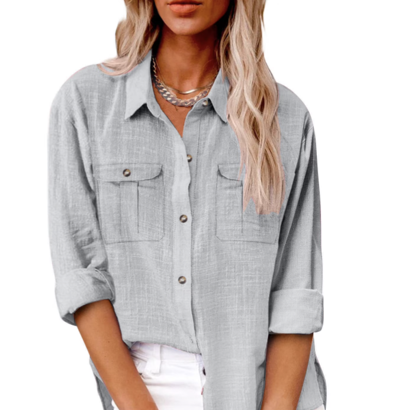
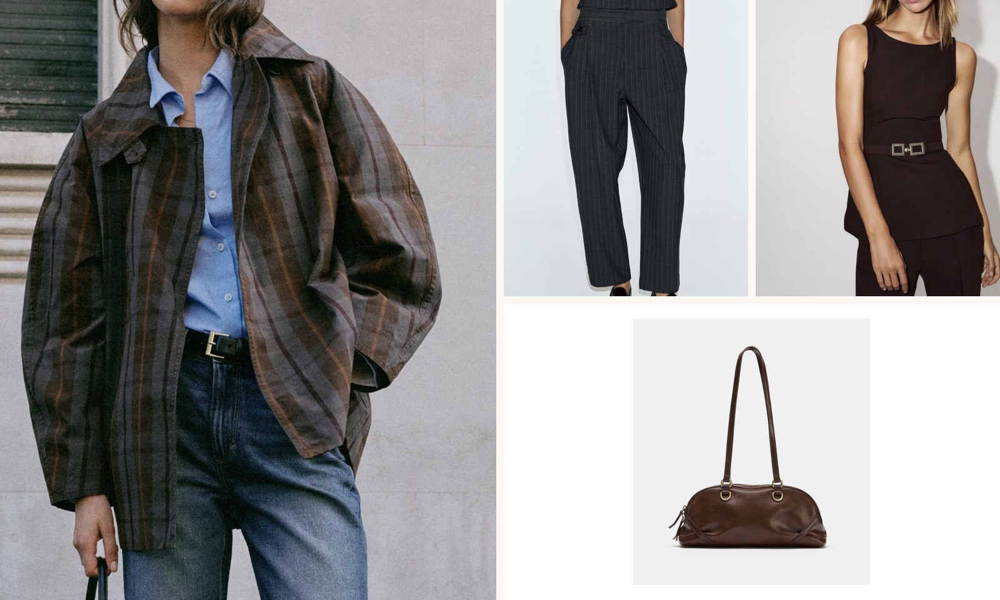

Everyday clothing made to last. Designed in Madrid, sewn in Portugal.
New in this week
Three new pieces landed on Monday, all cut from the same heavyweight
cotton we use for our workwear line. Stock is limited to
40 units per size, so sizes sell out quickly.
Browse the full collection to see every
piece we currently make.
The Linen Overshirt

A boxy overshirt in washed European linen, with a single chest pocket
and corozo buttons. It works as a light jacket in spring and as a
layer under a coat in winter.
Priced at 89 €.
This season we photographed the whole collection in a single afternoon on
the roof of our Madrid workshop. The idea was to show the clothes
as people actually wear them, wrinkles included.
Jump
to the autumn photographs.

How we make our clothes
JAPS runs on small batches. We produce twice a year, we never discount,
and we publish the cost breakdown of every garment. If a piece does not
sell, we remake it in a different colour instead of destroying it.
We design and pattern the garment in Madrid.
We order fabric from mills in Spain, Portugal and Italy.
A family-run workshop near Porto sews the batch.
We ship directly to you, with no middle warehouse.
Repairs are free for life. Bring a worn piece into any of our
three stores and we will mend it while you wait.